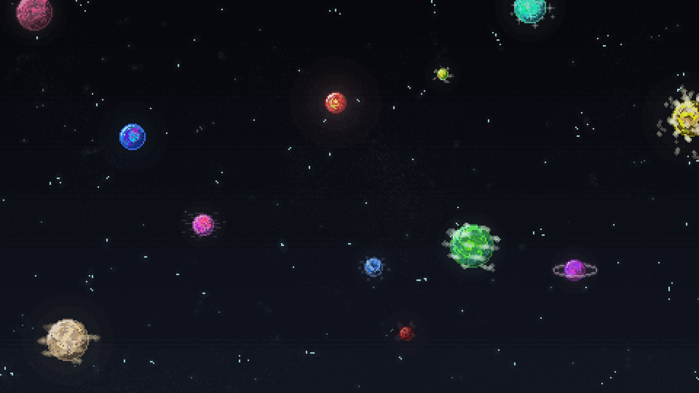
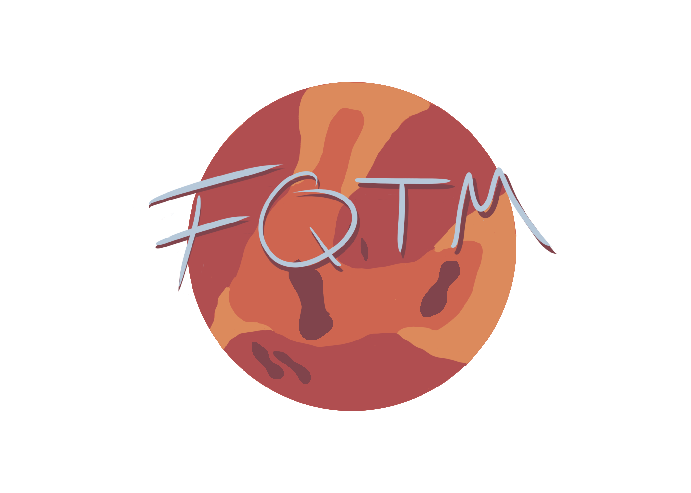
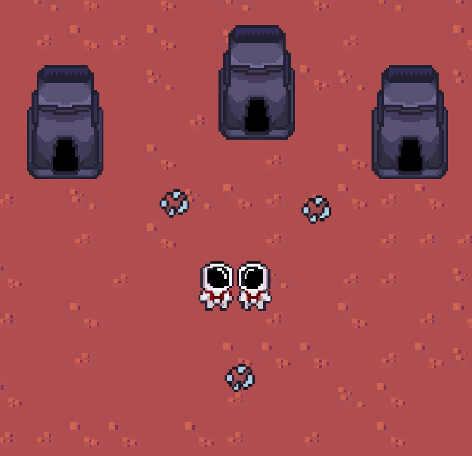

From Quebec to Mars est un jeu de type bac à sable , ou le but principal est de réussir à coloniser la planète rouge. Pour cela , les joueurs apparaîtront sur la planète Mars avec très peu d’outils et devront réussir à créer des bâtiments et des armes permettant de résister aux ennemis.
From Quebec to Mars est un jeu de type bac à sable , ou le but principal est de réussir à coloniser la planète rouge.
Pour cela , les joueurs apparaîtront sur la planète Mars avec très peu d’outils et devront réussir à créer des bâtiments et des armes permettant de résister aux ennemis.